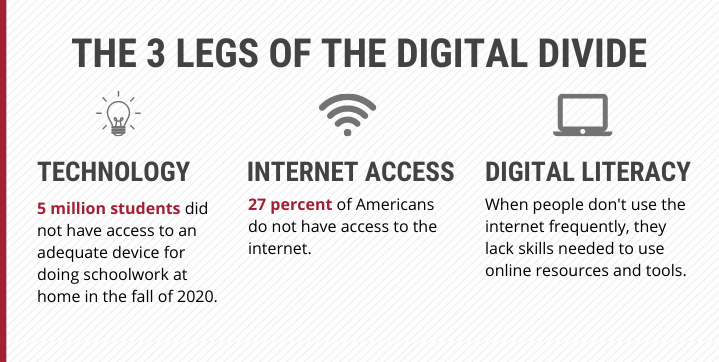

Click here if you would like to learn more about Internet Accessibility and why it should be considered a human right.
Click here to find various legal and educational resources to understand internet rights.
Click here to learn how you can help support the cause for internet accessibility for everyone.
Click here to view recent statistics on internet access globally, highlighting disparities and areas of improvement.
If you would like to learn more about the importance of internet accessibility or the challenges preventing more people from having basic access to internet, check some of links below.
Read arguments and discussions on whether internet access should be declared a basic human right:
Learn more about what is legally being done to facilitate access to internet, including policies and treaties:
Explore what academics have to say about the topic:
Use the tabs at the top of the website to find out more information on the topic, how to actively support the cause, explore statistics and data relating to internet accessibility across the world, or read about recent news on the topic!